| 日付 | 2018年11月3日（土） - 2018年11月4日（日） | ||||
|---|---|---|---|---|---|
| 山域 | 八ヶ岳 | ||||
| メンバー | 家族（妻、長女・7歳、長男・5歳） | ||||
| 山行形態 | 子連れ1泊2日山小屋泊 | ||||
| アクセス | 車 | ||||
| ルート (Map) |
|
関東に住んでいて10年以上山に登っているが、八ヶ岳はこれまで縁が無かった。
人が多い印象があるため、単独行を中心に行っていた頃は八ヶ岳を避けていたし
家族連れになってからは、日帰りでは行きにくい山であることから
なかなか行く機会がなかった。
今週末は土曜が祝日で久々に土日とも予定が空いているため、
山小屋泊に挑戦してみようと、いろいろ調べていたのだが、
その時、白羽の矢が立ったのが八ヶ岳だ。
時期的に赤岳は厳しいと思って、オーレン小屋から周辺の山を登る計画を立てたが
残念ながらオーレン小屋は個室が満室のため予約を取れなかった。
他にあまり選択肢が無いため、予約の取れた行者小屋から赤岳を目指すことにする。
1日目
やまのこ村の駐車場に車を停める。標高1690m。
駐車料金は2日で2000円と結構高い。
まだ余裕があるが、すでに100台程度の車が停まっている。
天気予報に反して空はどんよりとしている。
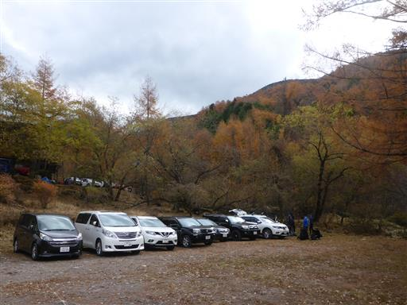
ここには赤岳山荘と美濃戸山荘の2つの山小屋がある。
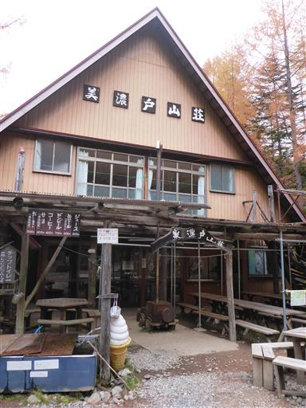
北沢コースと南沢コースの分岐点。
行者小屋へは南沢からの方が早いのだが、
帰りに南沢を歩くことにし、行きは遠回りの北沢コースを歩く。
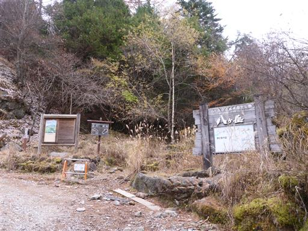
樹林帯の中、緩やかな傾斜の林道を登って行く。
周囲は一面苔に覆われている。
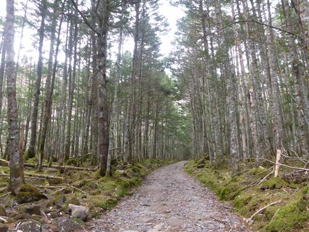
北沢コースの沢沿いの道は今年の台風の影響で封鎖されている。
代わりに標高の高いところに付けられた別の道を歩く。
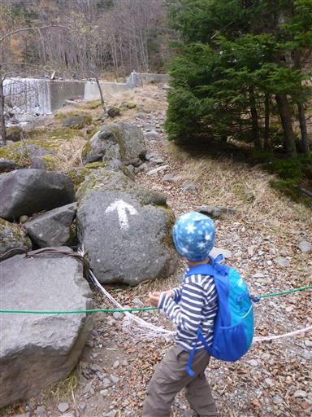
こちらは一般ルートではないのだが、過剰なほどのロープや赤印がある。
沢沿いの道が封鎖されたので、整備したのだろう。
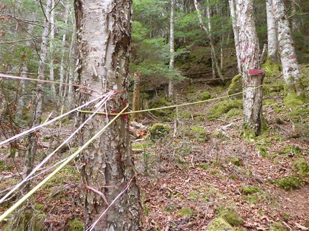
岩と苔に覆われた登山道。美しい景色だ。
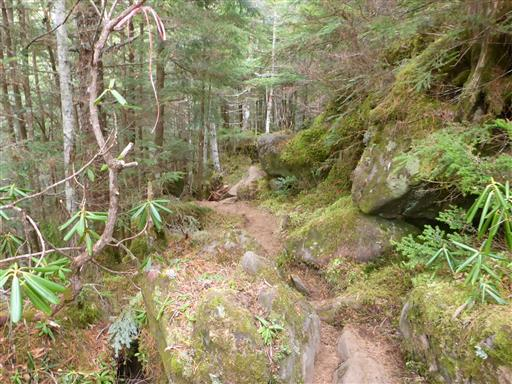
息子は少々遅れがち。
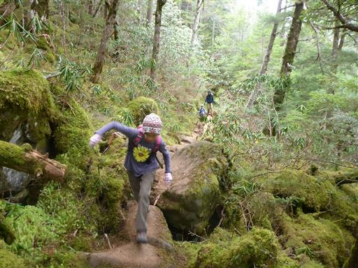
切り株の上に苔がもっさりと生えている。
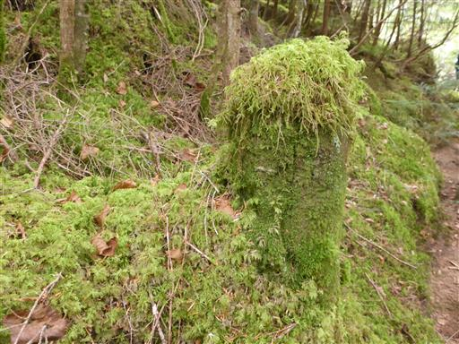
凍り付いた滝。あちこちにつららができている。
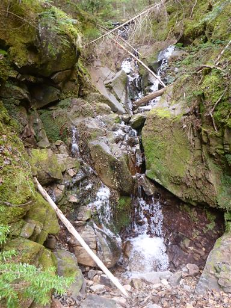
道を塞ぐ倒木。切り目が入っているが、途中で切るのを諦めたのだろうか？
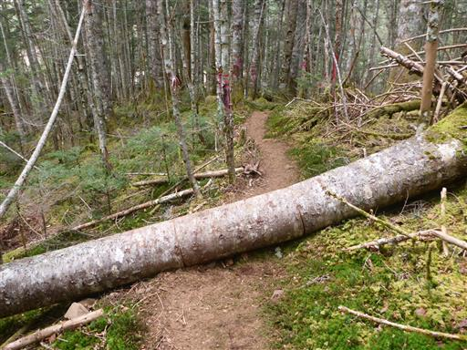
沢沿いコースと合流する。橋で対岸に渡る。
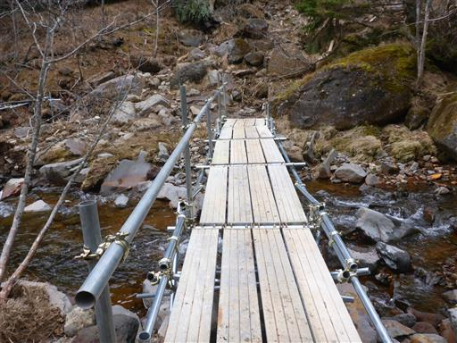
隣には流されて半分しかない橋がある。恐らくこれも台風の影響なのだろう。
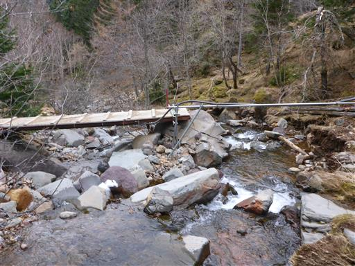
赤岳鉱泉に到着。巨大な構造物は冬にアイスクライミングの遊び場になる。
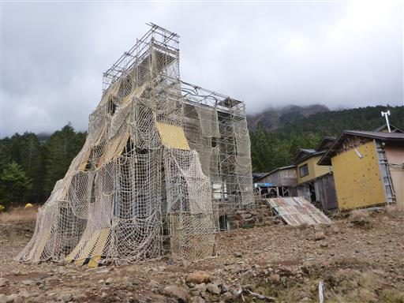
ベンチに座ってここで昼食をとる。
もうすぐ1時で、子供たちはすでに歩きながらおにぎりを食べていたため、
子供たちはおやつタイムだ。
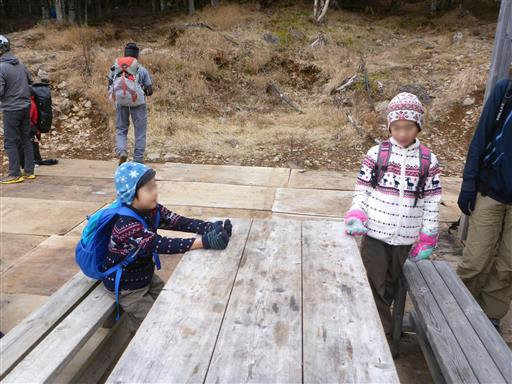
赤岳鉱泉は通年営業の人気の高い山小屋で、いつか泊まってみたい。
昼食をとったら赤岳鉱泉を後にして行者小屋に向かう。
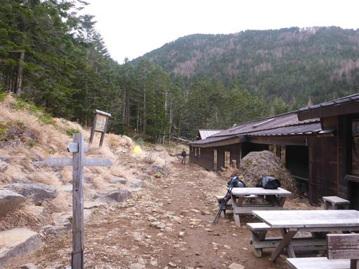
登山道は再び森の中へ。
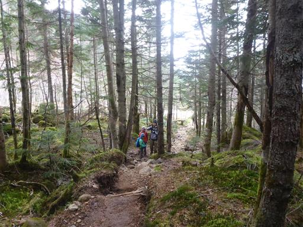
荷物を運ぶ人とすれ違う。
山小屋での食事やゴミは人の手によって運ばれている。
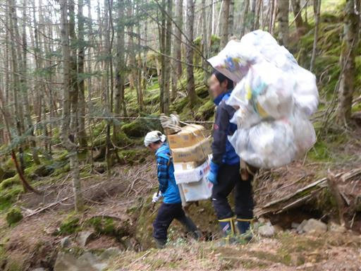
あちこちで霜柱が見られる。娘はもうあまり霜柱に関心を示さない。
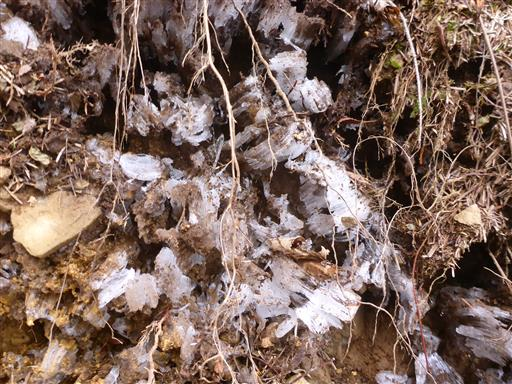
昼食後は元気になった息子が先行してどんどん歩いていく。
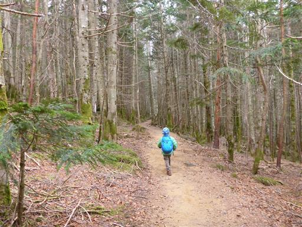
あっという間に行者小屋に到着。赤岳鉱泉から30分ほどの距離だ。
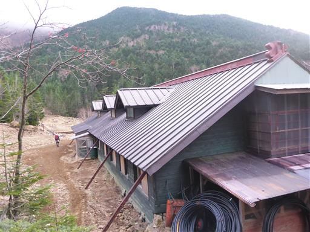
小屋の周りはテーブルとベンチがあって休憩できるようになっている。
ここで休んでいる登山者が何人かいる。本日の我々の行動はここまで。
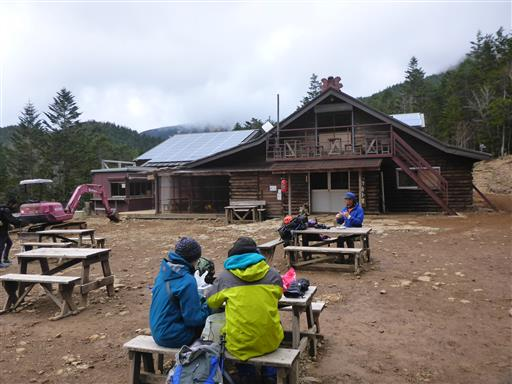
水場。周囲は水しぶきが凍り付いているが、水は良く出ている。
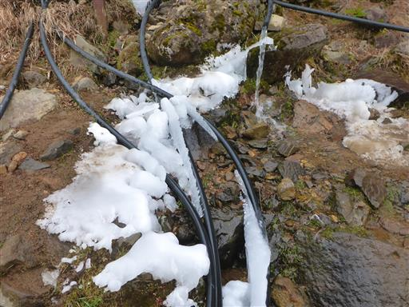
息子は氷が楽しくて水場の周りで遊び始める。
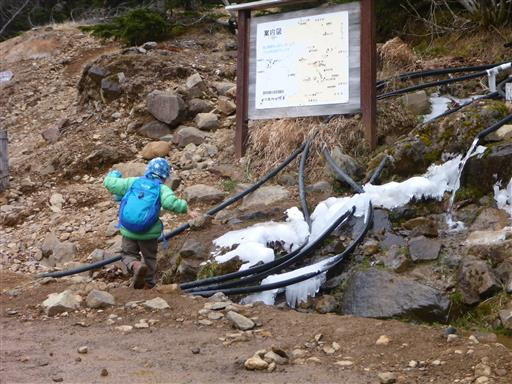
空は相変わらずどんより。このままでは明日の登山は中止だ。
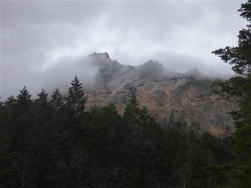
小屋の手続きを済ませる。子供たちが騒ぐと迷惑なので今回は個室を予約。
結局今夜は数組しか泊まらなかったが、個室だとマイペースで行動できる。
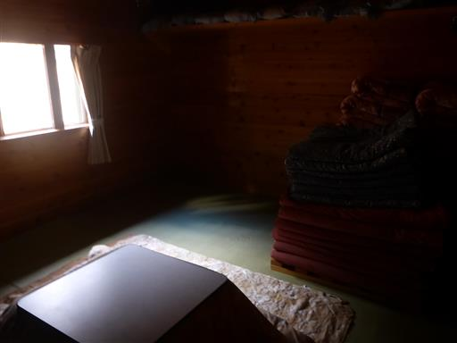
2階の大部屋は長細い。
大部屋にも炬燵があって快適そうだ。
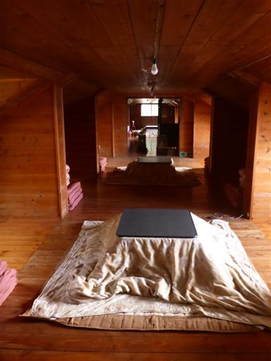
子供たちはストーブの前でリラックスモード。
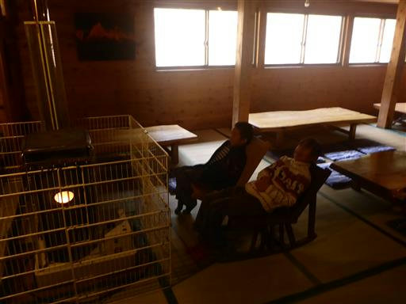
本日頑張って歩いたご褒美、ねるねるねるね。

その後はUNO。
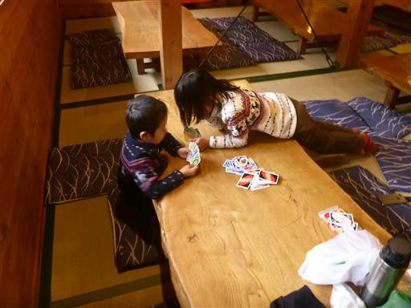
夕方は外に出て鬼ごっこやかけっこをして遊ぶ。
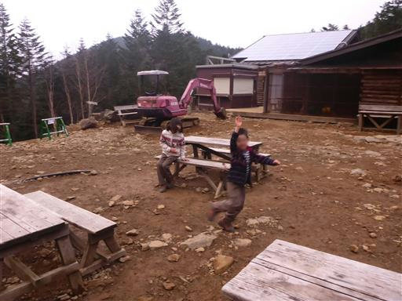
空は相変わらず雲が多い。
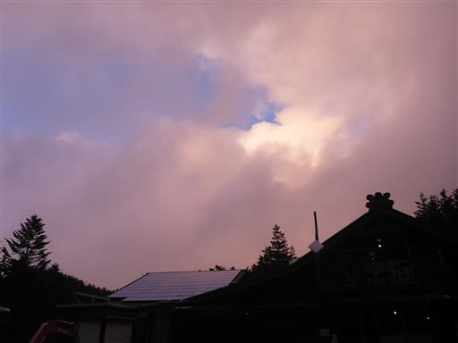
夕日に照らされて赤く染まった山肌が辛うじて見える。
夜中は満天の星空だった。明日の天気に期待だ。
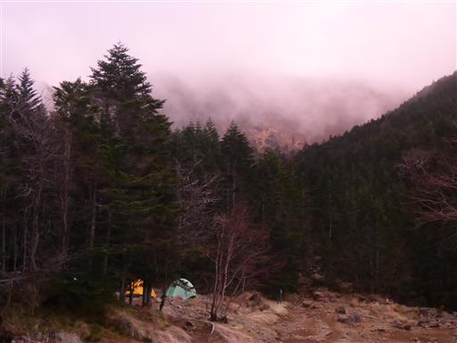